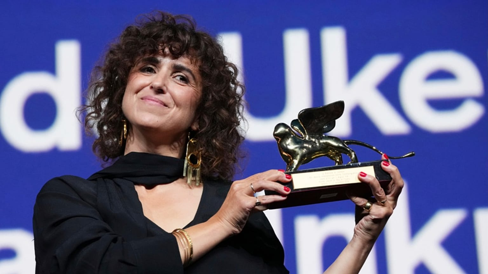

هشتاد و سومین دوره جشنواره بینالمللی فیلم ونیز، یکی از معتبرترین رویدادهای سینمایی جهان، شامگاه شنبه ۱۲ سپتامبر ۲۰۲۶ با اهدای جایزه شیر طلایی بهترین فیلم به «زن ناشناس» (Woman Unknown) ساخته کارگردان دانمارکی-مصری می التوخی به کار خود پایان داد. این فیلم که در فضای دانمارکِ پس از جنگ جهانی دوم میگذرد و داستان یک پرستار بچه به نام ماری را روایت میکند که گذشته پنهانش تهدیدی برای وصلت آینده او با کارفرمای ثروتمندش میشود، یکی از تنها دو فیلم بخش رقابتی اصلی بود که کارگردانی آن را یک زن بر عهده داشت.
هیئت داوران اصلی جشنواره که ریاست آن را بازیگر و کارگردان آمریکایی مگی جیلنهال بر عهده داشت، جایزه بهترین بازیگر زن را نیز به متیلده آرسل، بازیگر نقش اول «زن ناشناس»، اهدا کرد. می التوخی هنگام دریافت جایزه گفت این فیلم روایتگر زنانی است که دیده و شنیده نمیشوند و از بازیگران و عوامل خود برای اجرای پرشور نقشهایشان تشکر کرد. او همچنین به کمبود فیلمسازان زن در بخش رقابتی امسال اشاره کرد؛ موضوعی که پیشتر مگی جیلنهال نیز از همان روز نخست جشنواره آن را «یک مشکل ساختاری» توصیف کرده بود.
در میان دیگر جوایز اصلی این دوره، شیر نقرهای بزرگ جایزه هیئت داوران به فیلم «عشق ممکن» ساخته لی چانگ-دونگ، فیلمساز سرشناس کرهای، رسید؛ اثری که قرار است نماینده کره جنوبی در بخش بهترین فیلم بینالمللی اسکار باشد. شیر نقرهای بهترین کارگردانی نیز به ایلیا خرژانوفسکی، فیلمساز روس، برای فیلم بحثبرانگیز «داو» (DAU) درباره فیزیکدان شوروی لف لاندائو تعلق گرفت و جایزه ویژه هیئت داوران به مستند «نازا» ساخته یووال آبراهام و ریچل زور رسید. جان ملکوویچ برای فیلم «اسب وحشی نه» جایزه بهترین بازیگر مرد را از آن خود کرد.
هشتاد و سومین جشنواره ونیز از دوم تا دوازدهم سپتامبر ۲۰۲۶ در جزیره لیدو برگزار شد و بخش رقابتی اصلی آن ۲۱ فیلم از سازندگانی چون ورنر هرتسوگ، لانس اپنهایم، آندرهآ پالائورو و فلوریان زلر را در برمیگرفت. جورج کلونی و الن برستین نیز در این دوره جوایز شیر طلایی افتخاری برای یک عمر دستاورد هنری را دریافت کردند. تیم مستر شورتفیلم اخبار مربوط به مسیر جوایزی «زن ناشناس» در فصل جوایز پیش رو را در همین بخش دنبال خواهد کرد.
منبع خبر: Hollywood Reporter